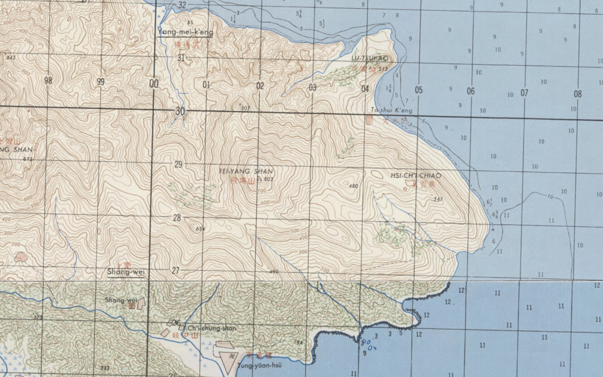

海柴角位于大鹏半岛，这里目前还没有被开发，因为礁石林立，风急浪高，船只靠岸也很困难，徒步几乎是达到的唯一选择。
海柴角地名是深圳特区成立后才有，在此之前海柴角有不少曾用名。就像是甲岸村之于隔岸村，羊台山之于阳台山、羊蹄山，海柴角似乎是另一个“地名规范”的受害者，只是相比前两者，海柴角人迹罕至，更鲜有人为之发声。
本文尽可能收集了有关海柴角的历史文献资料，由于不具备历史地理学、语言学等相关专业的研究知识，所以暂只限于收集。
海柴角
1987年《深圳市地名志》中如下描述海柴角：
在大鹏区三门岛北面 4.3 公里，突出海面 0.55 公里，植被较好，由花岗岩构成，因此角无风三尺浪，有风浪头百丈高，惊涛拍岸似劈柴声而得名。
此后海柴角便成为官方正式用名。

鞋柴角
东涌本地居民称之为鞋柴角。东涌股份在其官网写到：
海柴角是大鹏湾和大亚湾的流水界，浪大流急，海上漂浮物都汇聚到这一带，附近渔民经常在此处见到漂浮的鞋和木材，故名鞋柴角。1986年，深圳地名委员会正式定名为海柴角。大鹏山歌中这样唱道：“鞋柴无风三尺浪”，“无风起浪是骇豺”。
另有大鹏山歌《村落歌》唱：
“杨梅冲茶鹿咀角，大水坑打紫菜回。马料河水流冲街，大围炊烟熏鞋柴。”
1983年出版的《深圳地貌》记录深圳市经纬度范围时写到：
深圳市的经纬度位置，按陆地计，南起北纬22°26′59″（大鹏半岛南端），北至北纬22°51′49″（罗田水库北缘），西起东经113°45′44″（沙井均益围），东至东经114°37′2″（大鹏半岛鞋柴角）；按岛屿计，最南点为北纬22°24′01″（内伶仃岛东角咀）；最西点为东经113°46′50″（内伶仃岛牛利角）；按海界计，南起北纬22°09′，西起东经113°9′36″，东至东经114°8′43″。
1999年出版的《广东省志：地名志》与2014年出版的《广东省志（1979-2000）：行政区划·地名卷》介绍七娘山时均使用鞋柴角：
七娘山又名大鹏山。在宝安县东部，大鹏半岛南段的南澳镇境内。东起鞋柴角，西至枫木浪水库，南起东角，北至东山。面积约45平方公里。主峰海拔867.4米，是宝安县第一高峰。该山7个山峰，相传是七仙女下凡所成，故名。
1988年-1990年之间由深圳市国土局编写的《深圳市国土规划》甚至同时使用了鞋柴角和海柴角两个名称：
- 在第1页使用 海柴角 名称记录深圳市地理位置：
深圳市位于北纬22°27′（大鹏半岛南端）──22°52′（罗田水库北缘），东经113°46′（沙井均益围）──114°37′（大鹏半岛海柴角）。
- 在第72页使用 鞋柴角 名称记录深圳东部海岸线范围：
东部海岸线从沙头角至与惠阳交界的白沙湾总长约155公里,其中特区岸线21.4公里。主要由大鹏湾和大亚湾组成，其中大鹏湾岸线长约60公里，大鹏半岛端部（穿岩至鞋柴角）岸线24公里，大亚湾海岸线71公里。
但在历史资料中未见有“鞋柴角”，倒是有不少类似的名字：
崖柴角
《粤大记》、《雍正广东通志》、《嘉庆新安县志》这三本地方志书都标注为崖柴角：


𩋘[1]濟角/鞋㨈角


鞋揽角
1730年《海国闻见录》将其标注为鞋攬角，在清中后期出现了一批以之为底本的摹绘本海图，这些摹绘本基本都按照鞋攬角进行标注，如《中华沿海形势全图》、《海疆洋界形势全图》 等等[2]。


奚齐角/蹊跻角
清同治年间（1862-1875）《广东图志》[3]载：
县东北海岸与归善县西南海岸以大鹏山分界，东南为上太阬村，又屈西南过大鹏所城，又西南过水头村，又屈东南过东山村，又东南过杨梅阬，又东南过鹿嘴角，又东南过蹊跻角，又屈西南过东涌口，又西南过老大鹏汛，又屈西北过西涌口，又西北，过鹅公湾(海船可以寄碇)，又西北过沙鱼涌口，又西北过葵涌……
这是蹊跻角这一名字的最早记录，没有被标注在配图中，不过同时期的《广东图》中标注有蹊跻角:

1897年（清光绪二十三年）《广东舆地全图》在《新安县图》中标注了蹊跻角，配文和《广东图志》类似，1909年（清宣统元年）《广东图说十四卷首一卷》配相同文字：
县东北海岸与归善县西南海岸以大鹏山分界，西南为岭下，又西南过大坑村，屈西北过大鹏所城，屈西北过水头村，又南过蛟田村，屈东北过东山，屈东南过东山村杨梅阬，屈东过鹿嘴角，屈西南过蹊跻角东涌口，屈西北过西涌口老大鹏汛……

1926年《七省沿海形胜图其四之南日屿至三央口》中标注为溪跻角：

在几组民国时期由广东省陆地测量局测绘的地形图中，1930年12月印制的广东省十万分一地形图（CMS L100-81）《平海》中标注蹊跻角：

1930年测绘1945年印刷的广东五万分一地形图《大鹏》中标注奚齊角：

1930年代制作的五万分一广东省地形图（CMS L50-81）《大鹏》中标注奚齊角：

1938年一幅由台湾总督府文教局学务课制作的《广东省地图》中，标有釒奚角[4]：

1949年由英国陆军部 (Great Britain War Office) 制作发行的名为《Kwangtung 1:50000》(GSGS 4691) 的广东省中英双语地图中，标注为奚齐角（HSI-CH’I CHIAO）：

一张1930年之前由英国水文局（UKHO）制作的名为《Chart 3026: China, south east coast. Macau to Pedro Blanco, including Hong Kong, pre-1930》的海事地图同样标注为 Hsi Chi Chiao[5]。此图的布局与1976年国内出版的名为《大星山角到珠江口》的航海图非常类似，后者在同样的位置被标注为鞋柴角（Xiechai Jiǎo）。

1965年广东省人民委员会发布的《珠江口渔场管理试行规定》中使用奚齐角界定珠江口海域的2、3号渔场：
规定：东至惠阳县属大星簪岩开始，西至珠海县荷包岛的凤尾嘴之间的海域。这一海域划分为10个海区。各海区位置是:
……
(2)从宝安县大鹏角(即北纬22°27’，东经114°30.5’)开始，经大亚湾的钓鱼公小星山南角、大六甲岛、奚齐角连接线以内为第3号海区。此海区允许流动渔船中载重10吨、20匹马力以下的机动灯光罟、小钓艇、风帆灯光罟和其他小艇进人生产。
(3)从宝安县的奚齐角(即北纬22°34’，东经114°39.3’)，小星山南角(即北纬22°35.5’，东经114°50.5’)，大星山角(即北纬22°32.7’，东经114°53.1’))的连接线以北的大亚湾内海为第4号海区。
……– 摘自 2001年出版的《珠海市志》
2020年6月台风鹦鹉影响深圳期间，有游客被困奚齐角：
就在台风登陆的前一天，6月13日，大鹏新区警方接到市民户外穿越被困警情：三名游客于当日11时许，在南澳办事处海柴角海岸线往东涌方向奚齐角爬山，因体力不支迷路被困。
– 2020年6月15日《深圳晚报》《大鹏：联合救援队救出被困风雨中三游客》https://wb.sznews.com/PC/layout/202006/15/node_A03.html
同样是《深圳晚报》，2012年7月24日有题为《风大雨大6驴友被困海柴角》的报道。
目前的 Google 地图有趣得同时显示了海柴角，鞋柴角，奚齐角三个名称：

参考
见左：革，右：隹 - 汉典 ，同“鞋”。 ↩︎
具体列表可见成一农《明清海防总图研究》。 ↩︎
《广东图志九十二卷首一卷》有多个版本，部分版本名为《广东图说》，需要与《广东图说十四卷首一卷》相区别。 ↩︎
该字疑似错字，查无此异体字，见部首查询 [8画, 金, +10] - 教育部《异体字字典》 ↩︎
UKHO 已有200多年的海事地图制作历史，其公开的少数 Admiralty Chart 并没有高清图，但是 Hsi Chi Chiao 可以从此图中辨认出来。 ↩︎